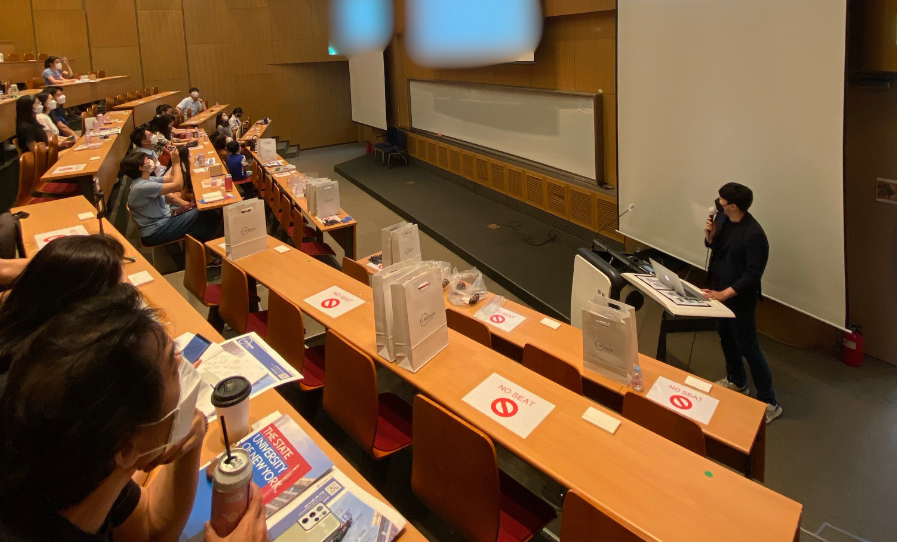
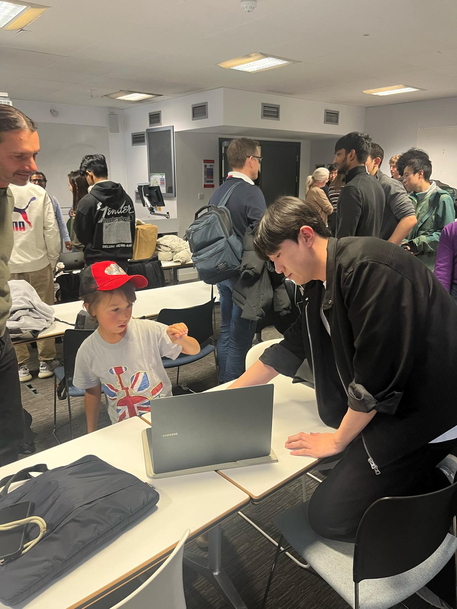
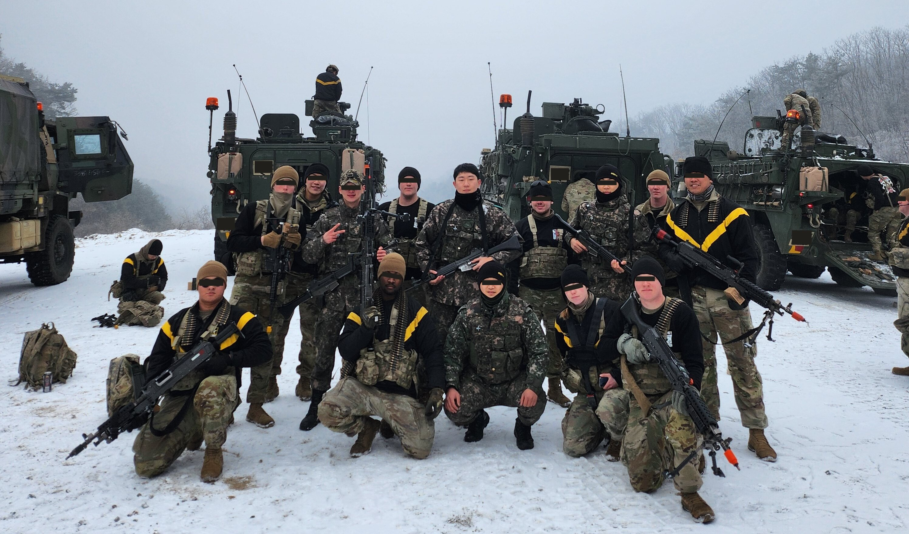
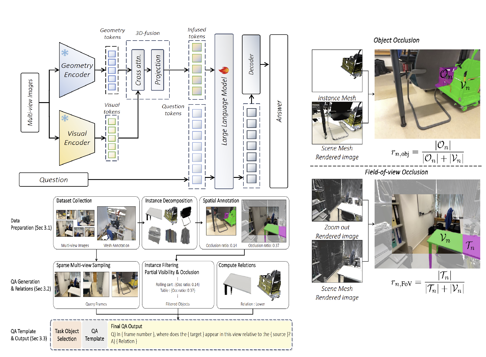
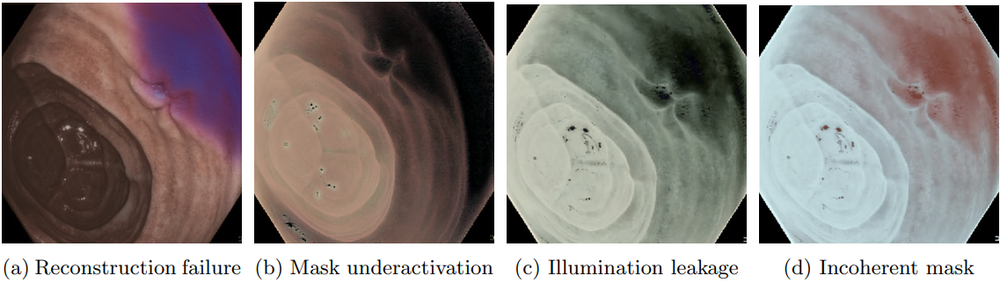

BSc Computer Science · UCL ● Open to research & internships
Minseok
Kwak
Teaching machines to perceive depth, space, and structure.
Computer vision and machine learning researcher specializing in depth estimation, multi-view geometry, and multimodal spatial reasoning. I build research-driven perception systems and push them onto hard real-world problems, from surgical endoscopy to occlusion-heavy 3D scenes.

Background
About
What I work on, and how I work.
01 Who I am
South Korean Computer Science graduate from UCL. I was drawn to engineering for its demand for deliberate reasoning toward a clear objective. Across my degree I worked widely through full-stack development, academic research, game development, web systems, finance, and medical imaging, while specializing in ML & AI as a professional career path.
02 How I work
I have worked in formally contracted client settings, high-pressure military environments, and research collaborations with domain experts at the frontier of their fields. I value structured planning, clear communication, and processes that let teams move efficiently and sustainably. Outcomes matter, but sound process matters more.
Career
Work Experience
A chronological record of the work that shaped how I build.
Seoul National University · VGI Lab
Machine Learning Research Intern
Long-term ML intern implementing state-of-the-art models across computer vision, image processing, geometric perception, and 3D reconstruction. Submitted a paper to CVPR/ECCV 2026 as third author, introducing a multimodal pipeline for spatial reasoning under heavy object occlusion.

UCL · NAS Partnership
Lead Developer, Game Development
Lead developer on a team of engineers under official partnership with the National Autistic Society and MotionInputGames. Delivered a Unity-based therapeutic game that helps autistic children develop motor skills through motion-capture integration.

Republic of Korea Army
Network Communications Specialist
Served 18 months in the Capital Mechanized Infantry Tiger Division, Information Communications Battalion. Held the squad-leader role for over half of service, allocating tasks, ensuring effective team collaboration, and maintaining flawless performance under physically and mentally demanding conditions.
Research & Project Development
Selected Works
From personal projects to top-tier conference submissions.

SpatialMosaic: A Multi-view VLM Dataset for Partial Visibility
Multimodal 3D VLM pipeline that learns spatial relations across multi-view scenarios, targeting frames with object occlusion and partial visibility without explicit 3D reconstruction. Integrates the VGGT foundation model and ranks among state-of-the-art on VSI-Bench.
Read abstract →
SHADeS++: Specular-Aware Monocular Depth for Endoscopy
An upgraded monocular depth-estimation model for endoscopy that explicitly models and suppresses diffuse and specular reflections while enforcing temporal consistency across frames, lifting depth-prediction quality on reflective surgical scenes.
Read Overview →
SuperHero SportsDay: Real-time Motion-Capture Sports Game
3D Unity therapeutic game built under official partnership with the National Autistic Society, designed to improve motor skills in autistic children during middle childhood through motion-capture integration and game-based therapy.
View project →Get in touch
Contact
Open to research collaborations, internship opportunities, and interesting problems.